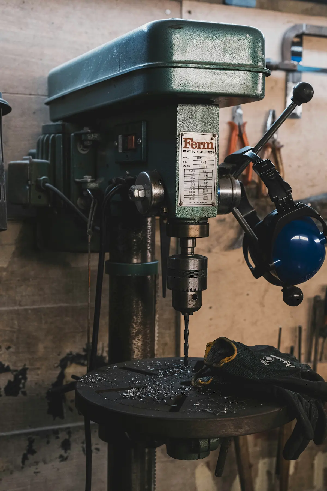
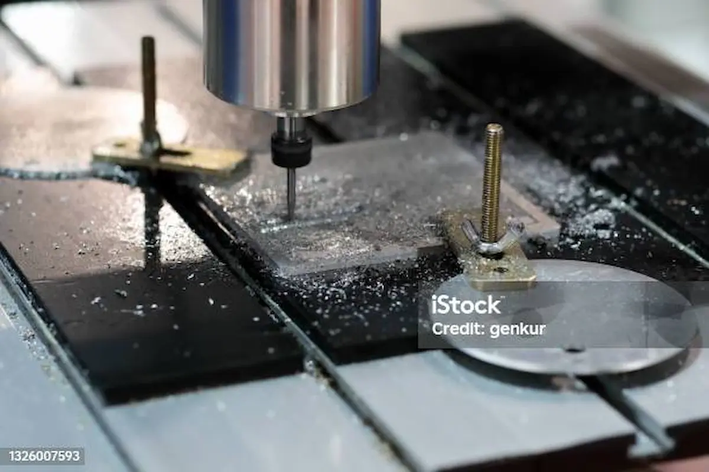
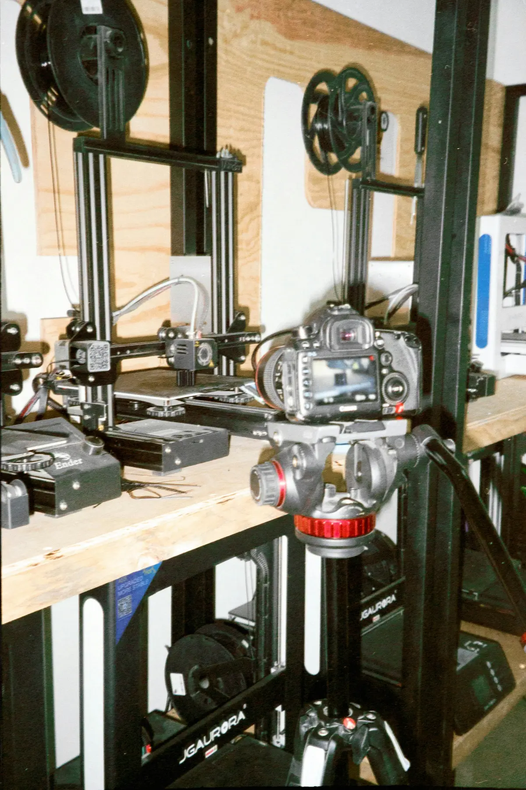
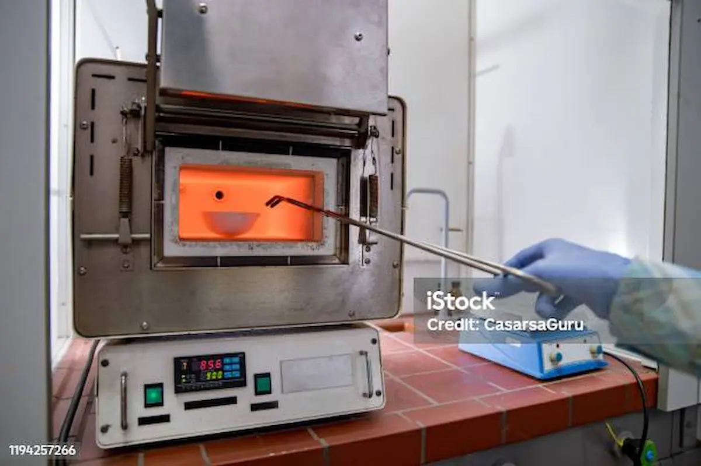
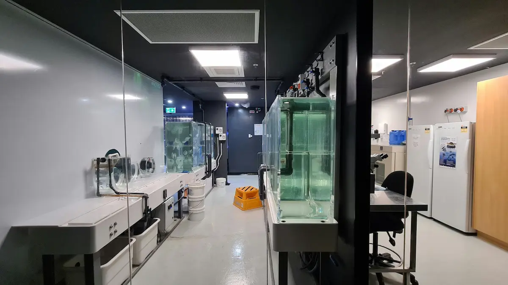

1) Why India needs hardware & bio lab democratization
Software is easy to distribute. But hardware and biological innovation require physical equipment, tools,
materials, test benches, and safe work environments. That’s why in India, many brilliant ideas never become products:
the cost of experimentation is too high.
India already reduced the cost of digital innovation using platforms like UPI, Aadhaar, and ABHA.
Now the same logic should apply to physical innovation: build public infrastructure so that people can create inventions
with low initial investment.
2) Machine tool labs: the backbone of invention

Machine tools are the foundation of manufacturing power.
If a person has access to lathes, milling machines, grinders, and measurement instruments,
they can build real prototypes—motors, pumps, mechanical parts, product housings, and more.
Public machine tool labs can become a “hardware version of DPI” by giving affordable access to:
- Lathe + milling machines
- Laser cutting / sheet metal fabrication
- Welding + assembly stations
- Measurement / inspection tools
- Safety + training supervision
3) CNC + rapid prototyping ecosystem

CNC machines are like the “compilers” of physical manufacturing.
When inventors can upload a design and quickly fabricate precise parts, product cycles become faster,
cheaper, and globally competitive.
A CNC + CAD/CAM public ecosystem would allow even small teams to build products like:
- Energy-efficient AC designs
- Improved washing machines
- Custom robotics & drones parts
- Tools for agriculture and food processing
4) 3D printing + molds + small batch manufacturing

3D printing is not just for prototypes.
When combined with molding + small batch production tools, it becomes a bridge between “idea” and “market”.
Public labs with 3D printers can help creators test:
- Ergonomics and industrial design
- Material behavior and durability
- Small production runs for market validation
5) Furnaces + kilns + materials experimentation

Some of India’s strongest future products will come from materials:
ceramics, composites, metallurgy, energy storage, insulation, and industrial coatings.
These require heat treatment, controlled firing, or chemical processes—too costly for individuals.
That’s why public furnaces/kilns labs are essential for product innovation across industries.
6) Community bio labs: the next frontier

Biology will define the new world order by 2030—healthcare, food systems, agriculture, biotech,
and even defense medicine.
India has an unmatched advantage: ancient knowledge systems + biodiversity + huge population-scale demand.
If India builds safe, regulated community bio labs, people can create:
- Herbal product quality testing
- Fermentation innovations (food + materials)
- Low-cost diagnostics experiments
- Microbial solutions for agriculture
7) Pricing & governance model
A scalable model is simple:
pay-per-use + membership tiers + training certification.
The lab should run like a public “innovation utility”:
- Entry-level user gets basic access after training
- Advanced machines require certification
- Booking + billing system is transparent
- Subsidies for students & first-time founders
8) Policy blueprint for India
What India needs is a national mission: Maker & Bio Labs Public Infrastructure Network. A simple roadmap:
- Build district-level maker hubs + repair labs
- Attach labs to IITs/NITs/Polytechnics as shared access
- Public-private partnerships for maintenance
- Grant credits for machine-time usage instead of cash-only grants
- Create safety SOPs and national certification curriculum
9) Case examples: small wins → national advantage

Small makers already build real businesses using limited community labs:
custom electronics, small machine parts, agriculture tools, repair-based manufacturing models.
If scaled nationally, this becomes India’s biggest competitive advantage:
millions of makers → millions of prototypes → thousands of factories.
10) Conclusion
India’s Digital Public Infrastructure unlocked scale in services.
The next breakthrough must be physical.
If India democratizes hardware and biology infrastructure, it will unlock:
- Low-cost invention & patents
- New manufacturing startups
- Bio-based industries built on Indian ingredients
- True innovation capacity for the 2030 era
The future is not only about writing code. It is about making the tools public — so anyone can build.